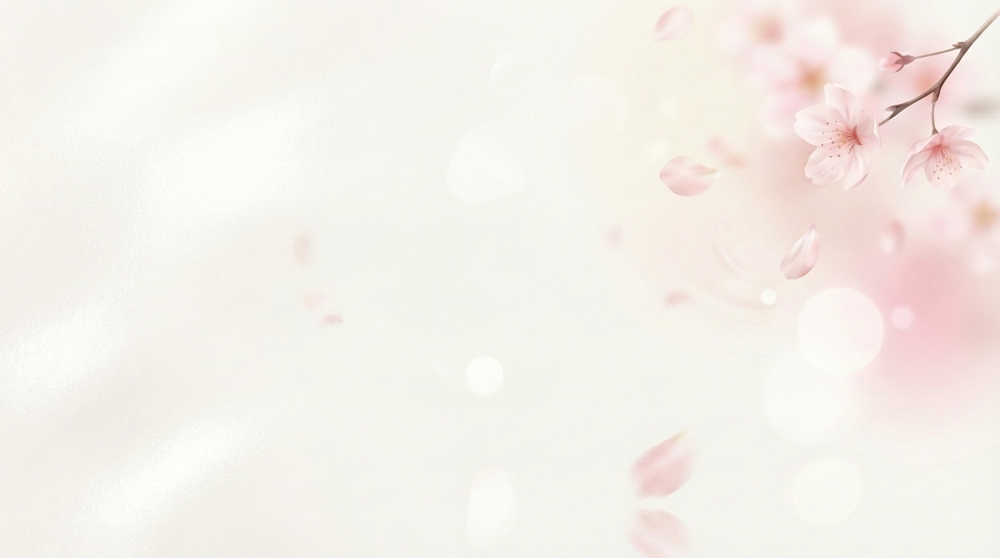

Flower Workspace
花径沉浸笔记页

Floral Focus Habitat
让文字像落进花间晨雾里， 轻轻停驻，再慢慢开出回响。
用粉白花影做背景，把注意力轻轻收回到中央。书写时仍然有花瓣回应，但头图本身更安静，也更沉浸。
Bloom Draft
花影草稿
字号
18px
花序草稿
输入时会有花瓣从光标边缘轻轻散开
午后的光穿过花枝，桌面上落下一层柔软的影子。你可以在这里写下不急着说出口的想法，让句子先像花瓣一样，安静地悬停片刻，再落进页里。